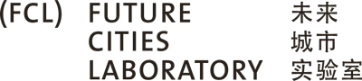

The guiding vision of the Future Cities Laboratory is to shape sustainable
future cities:
THROUGH SCIENCE | BY DESIGN | IN PLACE
THROUGH SCIENCE
To achieve sustainability, science is essential. Science provides the basis for understanding how
cities
develop and interact with the environment at different scales. Cities are composed of physical
stocks,
resource ows, social institutions and cultural catalysts whose interactions generate a quanti able
‘metabolism’. The scienti c focus of our research is to quantify such metabolisms, and understand
how
they might be best structured for the bene t of sustainable cities.
BY DESIGN
A sustainable city must also be liveable. To achieve liveability, design is essential. Design is
a collaborative process that combines analytical techniques, imaginative strategies and
transdisciplinary knowledge to generate new ideas and bring them to fruition. Design skills
bring, often con icting, technical, economic, social and cultural demands (such as environmental
sustainability, pro t, comfort, convenience, identity, security, satisfaction and desire) into
innovative and harmonious relationships.
IN PLACE
Science and design are effective only if they serve places and the lives that are lived in them.
Places result from common processes (growth and decline; competition and co-operation; ebb and ow of
capital, people, goods and ideas; climate change) and differentiating factors (geography, culture,
language, history). Our research addresses diverse lived places, from compact cities with
high-density
populations to extended cities with a mosaic of urban and rural land-uses.